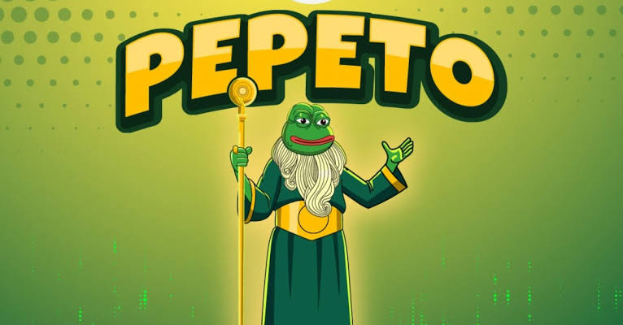

Offline Website Creator
Pepeto ($PEPETO) is a utility-focused, meme-themed cryptocurrency project built on the Ethereum blockchain that bridges viral internet culture with decentralized finance (DeFi). Unlike traditional "meme coins" that rely purely on community hype and social media speculation, Pepeto brands itself as an infrastructure-first initiative. The project aims to provide concrete, functional tools to the broader meme-coin market—including its own cross-chain bridge, a zero-fee decentralized exchange (DEX), an AI-driven security scanner, and staking rewards.
The project presents a distinct blend of cultural narrative and technical ambition designed to challenge established meme giants. Below is a comprehensive breakdown of what Pepeto is, how its ecosystem operates, its core technical features, tokenomics, and the risks associated with it.
The Vision and Identity of Pepeto
Pepeto positions its narrative around "Pepeto, the god of frogs". It frames its identity as an evolution of older, utility-less tokens like the original Pepe coin. While early meme coins achieved multi-billion-dollar valuations purely on crowd power, Pepeto's marketing emphasizes that long-term sustainability requires "Technology and Optimization".
Its goal is to build an inclusive ecosystem that provides liquidity, accessibility, and utility for all meme tokens, effectively acting as an infrastructure layer where community-driven assets can be traded safely and efficiently.
The Core Infrastructure Components
The main factor distinguishing Pepeto from standard meme coins is its suite of software applications. Rather than relying entirely on third-party protocols, the team developed several core applications that are entering public launch phases:
The Pepeto Cross-Chain Bridge: One of the main challenges in modern DeFi is the high cost and latency of moving assets between separate blockchains. The project developed the Pepeto Cross-Chain Bridge to allow seamless transfers between major networks, including Ethereum, Solana, BNB Chain, Arbitrum, and Base. It utilizes a "lock-and-mint" mechanism to keep supply perfectly consistent across all connected chains, processing swaps efficiently with minimal overhead.
Zero-Fee Decentralized Exchange (PepetoSwap): High gas and trading fees frequently eat into the profits of retail traders. Pepeto features its own zero-fee execution engine. By offering a trading interface with zero platform fees, it aims to aggregate trading volume from across the crypto landscape.
AI Contract Scanner: The meme-coin landscape is notoriously plagued by "rug pulls," malicious smart contracts, and fraudulent launches. Pepeto integrates an AI-driven contract scanner directly into its ecosystem. This tool automatically audits and screens tokens before they are listed on the platform, providing security and protecting retail users from obvious scams.
Staking Architecture: To incentivize long-term network security and token holding, a native staking protocol is embedded into the smart contracts. Users can lock up their assets to earn block rewards, which are distributed dynamically over time.
Tokenomics and Metrics
The native token powering this ecosystem is $PEPETO. Its design incorporates mechanics intended to drive value back into the project based on network usage:
Total Supply Dynamics: Mirroring historical meme token figures, Pepeto features a maximum total supply of 420 trillion tokens.
Deflationary Burn Mechanics: The project utilizes a built-in burn mechanism. A portion of transactional volume or network fees permanently removes tokens from circulation, structurally increasing scarcity over time if transaction velocity remains high.
Value Routing: The exchange platform is architected so that trading activity and cross-chain bridging create organic demand for the native asset, ensuring that high platform utility directly correlates with token economic utility.
Direct Feature Comparison
To see how Pepeto compares to traditional meme-themed assets, consider the following layout:
Ecosystem Feature
Traditional Meme Coins (e.g., Early Pepe / Doge)
Pepeto ($PEPETO) Ecosystem
Primary Value Driver
Social media hype, viral trends, community sentiment.
Infrastructure usage, software utility, staking incentives.
Native Trading Tools
None; completely reliant on external DEXs like Uniswap.
Built-in zero-fee decentralized exchange (PepetoSwap).
Cross-Chain Capability
Isolated to the native chain it was minted on.
Built-in multi-chain bridge (ETH, BSC, Solana, Base).
Security Parameters
Dependent on third-party audit firms or user due diligence.
Integrated AI contract scanner for project screening.
Supply Framework
Fixed or inflationary without core programmatic utility.
Deflationary burn structures tied directly to network usage.
Audits, Presale, and Project Status
According to security publications, Pepeto successfully completed a comprehensive smart contract code audit via SolidProof, ensuring that the underlying code matches standard safety practices and contains no obvious vulnerabilities.
The project raised significant initial capital through multi-stage public presales to fund its development. With major fundraising targets met, its proprietary cross-chain bridge and trading platform have entered final public testnets and optimization stages. As it shifts toward public exchange listings, users can track live market data, deployment schedules, and network contracts directly across aggregators like CoinMarketCap and Coinbase Price Tracking.
Critical Disclosures and Investment Risks
While the technological architecture sounds promising, investing in or interacting with Pepeto carries high risk:
Meme Coin Volatility: Despite its technical infrastructure, Pepeto is deeply intertwined with volatile meme-coin culture. Price movements can be highly erratic and susceptible to broader market shifts.
Name Duplication: In the crypto ecosystem, anyone can deploy a token with any name. Investors must be incredibly careful to ensure they are interacting with the official audited smart contracts, as duplicate or fake tokens frequently appear on decentralized platforms.
Execution Risk: Promoted features like "zero-fee trading" or "AI contract scanning" are highly complex to maintain at scale. The long-term viability of the token depends entirely on the development team successfully launching and securing these platforms against exploitation.
If you are exploring the ecosystem further, tell me if you want to look at the exact contract addresses across different chains or view the detailed staking reward structures.
Offline Website Creator